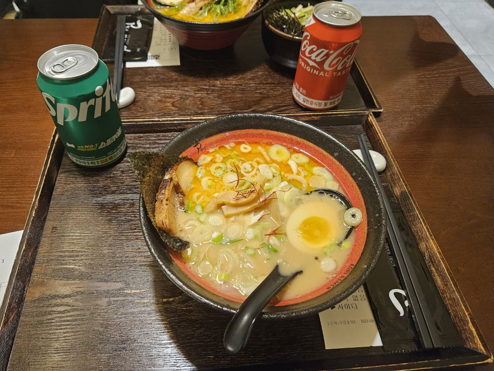
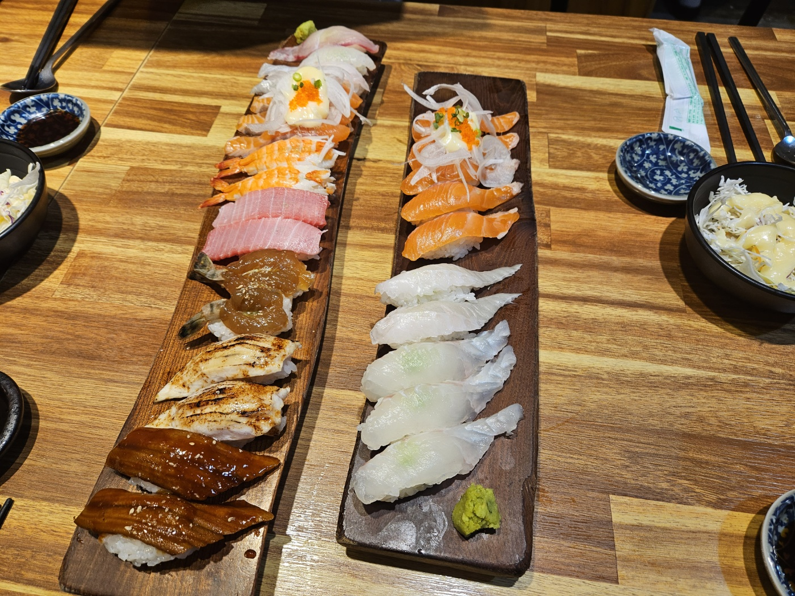
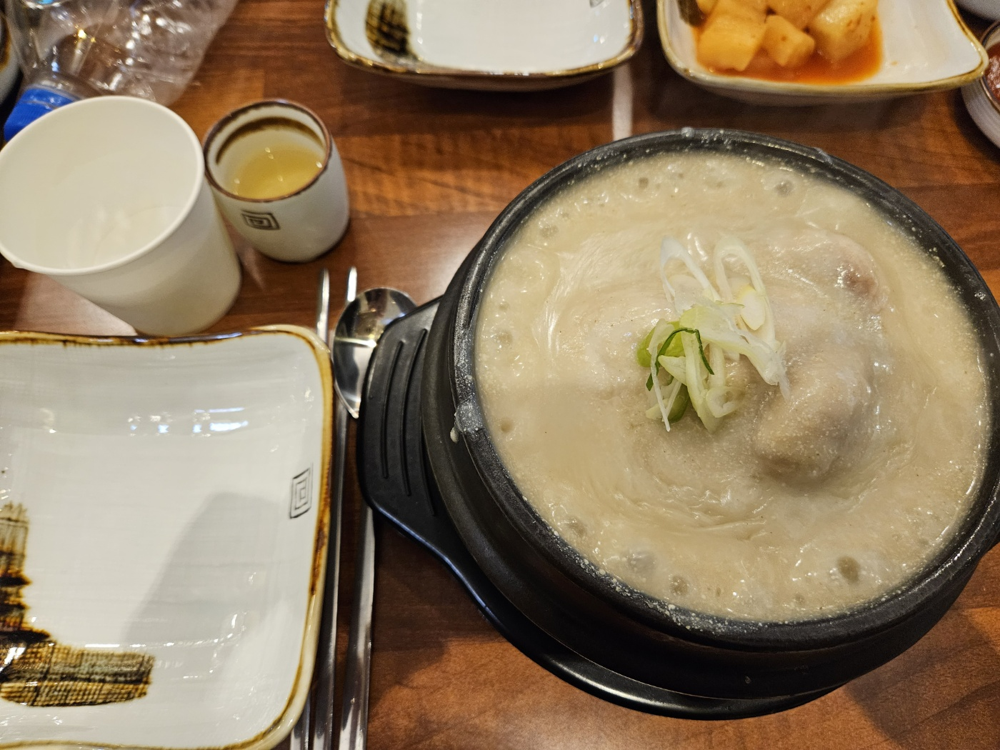
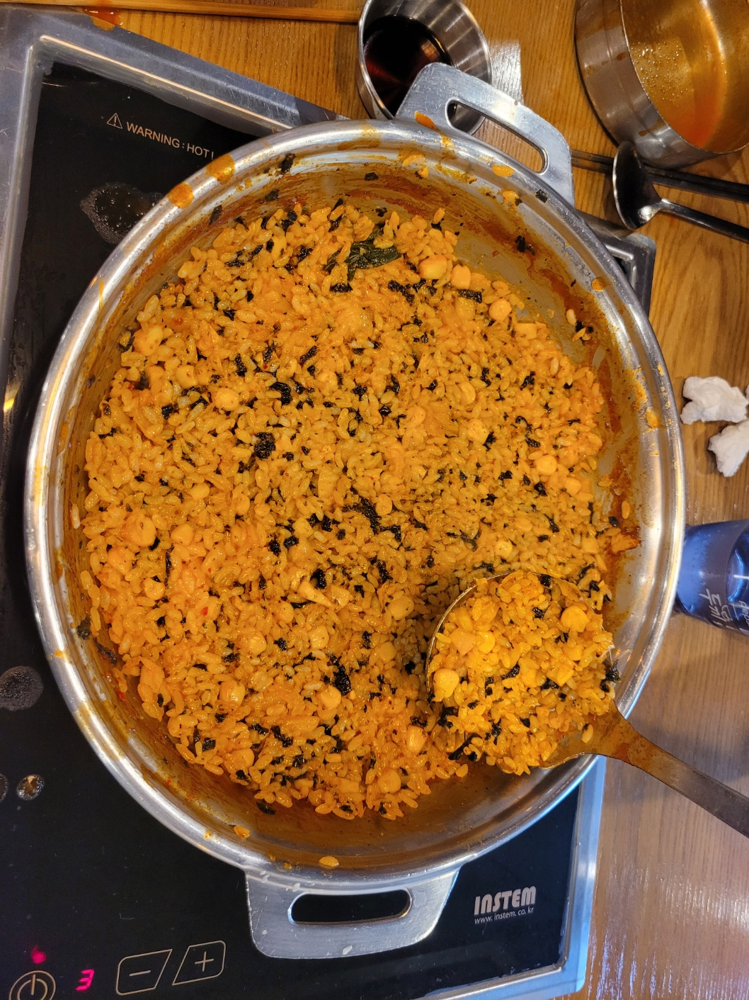
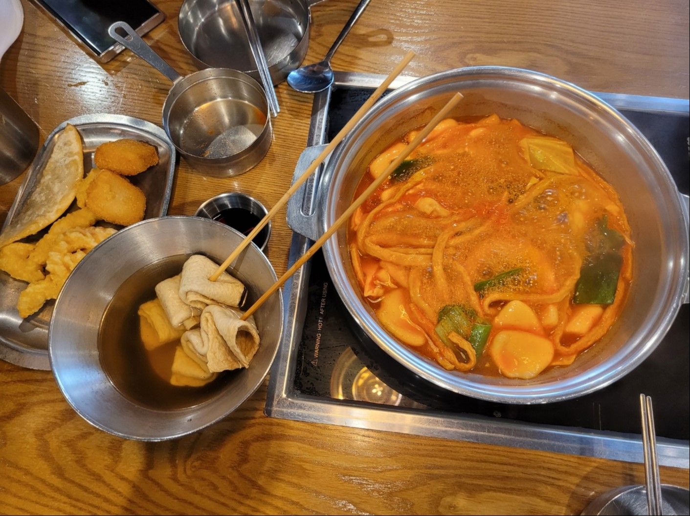
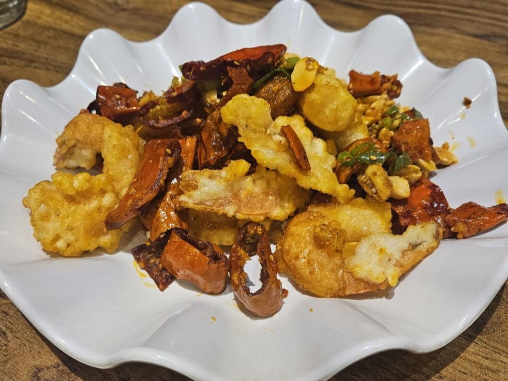

| 순서 | 가게사진 | 가게명 및 위치 | 상세설명 | 바로가기 |
|---|---|---|---|---|
| 1 | 아오리 라멘-연신내역 5번 출구에서 190m |
일본의 이치란 라멘과 비슷한 라멘 맛집. 아오리라멘과 TKG계란간장밥 조합은 환상이다. 성인이라면 여기에 맥주까지 먹기 딱 좋다. 식비가 다른 곳보다 부담이 덜 되는 편이다.
| ||
| 2 | 무사스시-구산역 2번 출구에서 61m |
연신내역과 거리가 좀 멀긴 하지만 구산역 쪽으로 쭉 내려와 먹을 만한 초밥집이다. 연신내역 근처에 초밥집이 있지만 이곳이 더 나은 이유는 가격 뿐만 아니라 맛도 깔끔하다. 하지만 연신내 근처에서 먹고 싶다면 유라쿠를 추천한다. |
네이버place바로가기 | |
| 3 | 현지들깨 삼계탕-연신내역 5번 출구에서 276m |
추운 겨울철 혹은 복날 삼계탕이 먹고 싶을 땐 이 곳 현지들깨 삼계탕을 추천한다. 고소하면서 들깨 특유의 비린향은 나지 않고 양도 충분하고 가격도 합리적이다. |
네이버place바로가기 | |
| 4 |  | 두끼 떡볶이-연신내역 5번 출구에서 157m |
누구나 다 아는 뷔페식 즉석 떡볶이 체인점. 저렴한 가격에 마음껏 떡볶이와 어묵, 튀김, 볶음밥을 먹을 수 있다. 치즈, 꿔바로우, 우삼겹 등은 별도로 내야한다. |
네이버place바로가기 |
| 5 |  | 이모네 곱창 2호점-연신내역 5번 출구에서 292m |
돼지곱창을 좋아한다면 이 곳을 추천한다. 연신내에도 3지점이 있는데 2호점이 가장 깨끗하고 맛있다. 또한 대로변에 있어 찾기도 쉽다. |
네이버place바로가기 |
| 4 |  |
롤링파스타-연신내역 5번 출구에서 157m |
백종원표 체인점으로, 가성비 파스타를 맛볼 수 있다. 파스타 1그릇이 8천원대로 아주 저렴하다. 그러나 그만큼 면이 얇은 편이고 대식가 2명이 간다면 파스타 2개에 피자 1개는 필수인 점을 고려해야한다. 맛은 훌륭하다. |
네이버place바로가기 |
| 4 |  | 미각-연신내역 5번 출구에서 266m |
골목에 있어 찾기 쉽지 않은 중식 맛집이다. 하지만 찾기 어려운 만큼 요리부터 식사까지 맛있다. 특히 마라새우가 흔히 생각하는 그런 마라소스를 묻힌 것이 아니라서 특색 있고 맛있다. |
네이버place바로가기 |